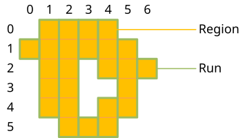
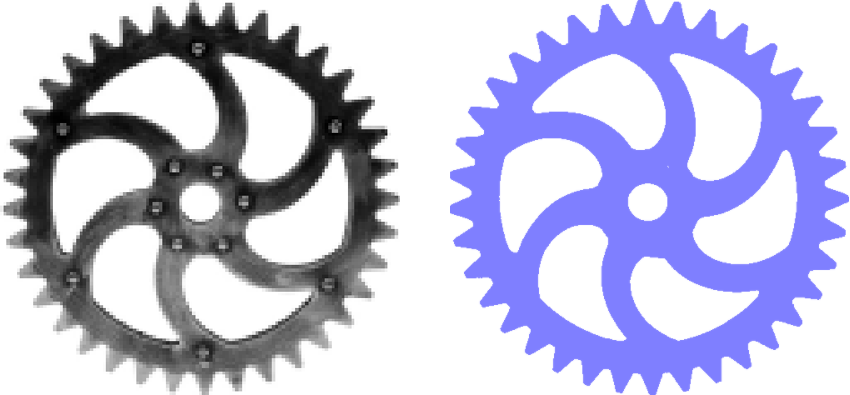

Introduction
A region can be seen as a set of discrete coordinates in the cartesian plane. In fact, one of the main motivations for the region concept was to model a set of pixel locations for image processing purposes.
A region is represented with a sorted list of vertical runs. Runs themselves are represented with a column coordinate and a range of vertical row coordinates.
Coordinate convention. Coordinates are written (column, row) and the package follows the mathematical convention: column (x) increases to the right and row (y) increases upward. As a result top(r) returns the maximum row value and bottom(r) returns the minimum row value, and the function names match the visual meaning. Note that this is the opposite of Julia's image-display convention, where the first index of img[i, j] is interpreted as a downward-growing row; if you mix Regions with image arrays directly, remember that what the package calls a larger row sits above a smaller one.

Here is how this region can be created using the Julia REPL. Each Run(column, rows) specifies a vertical span of pixels in a given column:
julia> Region([Run(0, 1:4), Run(1, 0:5), Run(2, 1:2), Run(2, 4:6), Run(3, 1:2), Run(3, 5:5), Run(4, 1:2), Run(4, 4:5), Run(5, 2:4)])
Region(Run[Run(0, 1:4), Run(1, 0:5), Run(2, 1:2), Run(2, 4:6), Run(3, 1:2), Run(3, 5:5), Run(4, 1:2), Run(4, 4:5), Run(5, 2:4)], false)In order to explain how a region is built, we start with the innermost element, the range. We continue with the run, and finally we end with a region, which essentially is a sorted vector of runs. We build our understanding of regions bottom up, before we finally explain some usage scenarios of regions.
Range
The most basic building block of a region is a range. The UnitRange{Int64} is a suitable type and can be written like this:
julia> 0:99
0:99
julia> (0:99).start
0
julia> (0:99).stop
99
julia> length(0:99)
100
julia> length(-50:50)
101A range where the stop is less than the start is considered empty.
julia> isempty(0:0)
false
julia> isempty(1:0)
trueThe natural sort order of ranges is to sort them by their start.
julia> 0:100 < 1:101
true
julia> 0:1 < 1:100
true
julia> 0:50 < 0:100
true
julia> isless(0:100, 1:101)
trueInversion mirrors a range at the origin.
julia> invert(0:100)
-100:0
julia> invert(invert(5:10))
5:10Translation moves a range by an offset.
julia> translate(0:100, 50)
50:150
julia> (10:20) + 30
40:50
julia> 10 + (20:30)
30:40
julia> (50:100) - 10
40:90You can check whether a value is contained in a range.
julia> contains(10:20, 10)
true
julia> contains(10:20, 15)
true
julia> contains(10:20, 20)
true
julia> contains(10:20, 9)
false
julia> 14 ∈ 10:20
trueTwo ranges can overlap or touch.
julia> isoverlapping(10:20, 5:25)
true
julia> isoverlapping(0:0, 1:1)
false
julia> istouching(0:0, 1:1)
true
julia> istouching(0:0, 2:2)
falseRun
A run combines a column coordinate with a range of vertical row coordinates.
An empty run is a run whose rows range is empty.
julia> isempty(Run(0, 0:-1))
true
julia> isempty(Run(0, 0:100))
falseThe natural sort order of runs is to sort them by their column, then by their rows range.
julia> Run(0, 0:100) < Run(1, 0:100)
true
julia> Run(0, 0:100) < Run(0, 1:101)
trueInversion mirrors a run at the origin, in both the horizontal and vertical directions.
julia> invert(Run(10, 50:100))
Run(-10, -100:-50)
julia> invert(invert(Run(1, 5:10)))
Run(1, 5:10)Translation moves a run by horizontal and vertical offsets.
julia> translate(Run(0, 0:100), 10, 20)
Run(10, 20:120)
julia> Run(0, 10:20) + [30, 40]
Run(30, 50:60)
julia> Run(0, 10:20) - [30, 40]
Run(-30, -30:-20)Two runs can overlap or touch. They can only overlap if they share the same column.
julia> isoverlapping(Run(3, 0:10), Run(3, 5:15))
true
julia> isoverlapping(Run(3, 0:10), Run(4, 0:10))
false
julia> istouching(Run(3, 0:10), Run(4, 5:15))
true
julia> istouching(Run(3, 0:10), Run(5, 5:15))
falseRegion
A region is a subset of the discrete two-dimensional space. It represents a set (in the sense of mathematical set theory) of discrete coordinates. A region may be finite or infinite. A region may not be connected and it may contain holes.
Examples of regions: two simple regions, a region with a hole and a region consisting of two parts.
Regions are an essential concept in computer vision and are useful in many respects.
Regions are not necessarily related to images; they can exist independently and without images. In addition, the coordinate space is not confined to the bounds of an image, and regions can extend into the quadrants with negative coordinates in the two-dimensional space.
Regions can be built in various ways:
- programatically by building and adding runs,
- with functions that construct specific forms of regions,
- by segmentation of an image.
As already mentioned above, regions consist of a vector of sorted runs. Many functions depend on these sorted runs. Whenever the runs are not sorted, these functions will not work properly. You must therefore make sure that you keep the runs sorted whenever you directly manipulate the runs vector. One way to keep the runs sorted is to call the sort! function to sort the runs in place.
julia> reg = Region([Run(0, -2:2), Run(1, 0:0), Run(-1, 0:0), Run(2, 0:0), Run(-2, 0:0)])
Region(Run[Run(0, -2:2), Run(1, 0:0), Run(-1, 0:0), Run(2, 0:0), Run(-2, 0:0)], false)
julia> sort!(reg.runs)
5-element Vector{Run}:
Run(-2, 0:0)
Run(-1, 0:0)
Run(0, -2:2)
Run(1, 0:0)
Run(2, 0:0)
julia> reg
Region(Run[Run(-2, 0:0), Run(-1, 0:0), Run(0, -2:2), Run(1, 0:0), Run(2, 0:0)], false)Build regions from runs
Here is an example of a very simple 5×5 cross shaped region, centered on the origin. It uses a vertical run for column 0 (spanning rows −2 to 2) and single-pixel runs at row 0 for columns −2, −1, 1, and 2:
julia> Region([Run(-2, 0:0), Run(-1, 0:0), Run(0, -2:2), Run(1, 0:0), Run(2, 0:0)])
Region(Run[Run(-2, 0:0), Run(-1, 0:0), Run(0, -2:2), Run(1, 0:0), Run(2, 0:0)], false)If you build regions this way, you must ensure that the runs are properly sorted, otherwise many functions will not work properly. An easy way to ensure that the runs are sorted is to call sort on the runs vector.
julia> Region(sort([Run(0, -2:2), Run(1, 0:0), Run(-1, 0:0), Run(2, 0:0), Run(-2, 0:0)]))
Region(Run[Run(-2, 0:0), Run(-1, 0:0), Run(0, -2:2), Run(1, 0:0), Run(2, 0:0)], false)Build regions from geometry
Regions can be created from simple geometric forms. region_from_box creates a filled rectangular region from its bounding box coordinates. The four arguments are left, top, right, bottom, where top > bottom and right > left.
julia> box = region_from_box(1, 4, 3, 1)
Region(Run[Run(1, 1:4), Run(2, 1:4), Run(3, 1:4)], false)
julia> bounds(box)
(1, 4, 3, 1)
julia> contains(box, 2, 3)
true
julia> contains(box, 0, 3)
falseThe result contains one vertical run per column, each spanning from bottom to top.
region_from_polygon creates a filled region from an arbitrary polygon given as a vector of (column, row) vertex pairs, in clockwise or counter-clockwise order.
julia> tri = region_from_polygon([(0,0), (4,0), (2,4)]);
julia> length(tri.runs)
4
julia> contains(tri, 2, 2)
trueregion_from_circle creates a filled circular region from a center point and radius. All integer coordinates within the circle (satisfying (x−cx)² + (y−cy)² ≤ r²) are included.
julia> c = region_from_circle(0, 0, 3);
julia> contains(c, 0, 3)
true
julia> contains(c, 2, 2)
true
julia> contains(c, 3, 3)
falseBuild regions by segmentation
Image segmentation turns a grayscale image into a region by applying a predicate to each pixel. Pixels for which the predicate returns true become part of the region.
Regions extends Images.binarize with a predicate-based method rather than defining a competing function. Julia's dispatch selects the correct method by the second argument type: a Function argument routes to the Regions method and returns a Region; an algorithm object such as Otsu() routes to the Images method unchanged. Because both packages export the same underlying function, loading both with using raises no ambiguity warning.
julia> img = [0.0 1.0 0.0; 0.0 1.0 0.0; 0.0 1.0 0.0];
julia> seg = binarize(img, px -> px > 0.5);
julia> length(seg.runs)
1
julia> seg.runs[1]
Run(2, 1:3)Here the 3×3 image has bright pixels only in column 2, producing a single run spanning all three rows. Real-world usage typically loads a grayscale image from disk and segments it:
using FileIO, ImageIO, ImageMagick
img = load("gear.png")
reg = binarize(img, px -> px < 0.9)The grayscale image of the gear is binarized, i.e. all pixels below 90 % brightness are contained in the region.

Design notes
Why column-major run-length encoding?
Regions are stored as runs of consecutive rows within a single column, rather than the more common row-based RLE found in many image-processing libraries. The choice is made for three concrete reasons that all stem from Julia's column-major array layout:
- Cache locality. Pixels in the same column lie in consecutive memory under
img[row, column], so iterating over a run touches only sequential addresses. - SIMD-friendly inner loops.
binarizeand the per-region image operations that use a region as a domain both walk a column at a time, which the compiler can vectorise without further help. - Embarrassingly-parallel segmentation. Because each column is processed independently,
binarizedistributes columns across threads when the image has at least 1024 columns (and Julia is started with--threads). A row-based RLE would couple adjacent rows during merging and would not parallelise as cleanly.
Cost model
Once a region is built, the cost of subsequent operations is governed by the number of runs, not by the image area. Connected components, set operations, and morphology are all O(n_runs) (morphology with a structuring element of n_se runs is O(n_runs · n_se)). On sparse industrial images, where n_runs is typically a small fraction of W · H, this is orders of magnitude faster than equivalent operations on a pixel array. The one-time cost of binarize is O(W · H) and is amortised after one or two operations.
See the Comparison page for measured speedups versus pixel-array alternatives and for guidance on when each representation is preferable.